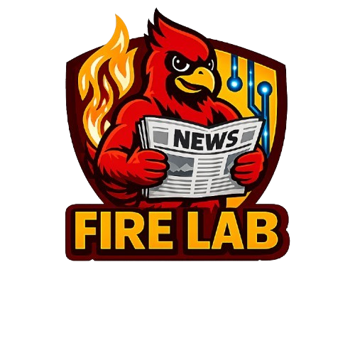

July2026
Md Al Muzahid Nayim Successfully Defended His M.S. Thesis
Md Al Muzahid Nayim successfully defended his M.S. thesis on on-device machine-learning model stealing through cache-based architecture reconstruction. Congratulations, Nayim!
Publications, awards, talks, research milestones, and updates from the FIRE Lab community.

Md Al Muzahid Nayim successfully defended his M.S. thesis on on-device machine-learning model stealing through cache-based architecture reconstruction. Congratulations, Nayim!
Md. Hasan Shahriar presented our paper on Adversarial Perturbation Detection via Natural Noise Analysis
Check Paper DetailsDr. Sikder received Distinguished Reviewer Award at IEEE S&P, 2026.
Dr. Sikder presented ongoing research on AI-assisted tools for actuaries and the insurance industry at the CyInsurance Research Initiative (CyRI) launch at Iowa State University.
Our paper on adversarial perturbation detection leveraging natural noise patterns got accepted at ASIA CCS 2026. Congrats Hasan and the team!
Check Paper DetailsLiu Lu presented our project on AI-assisted critical mineral recovery from coal combustion residuals
David presented our NDSS 2026 paper, Achieving ZEN, on reconstructing deep learning models from memory for attribution and reuse.
Check The PresentationSyed Sherazi successfully defended his M.S. thesis on adversarial attacks against BLE-Based Wireless Body Area Networks. Congrats Syed!
Dr. Sikder presented ongoing research on secure and trustworthy LLMs at IEEE DISTILL workshop panel.
Jon presented our ACM 2026 paper on dead drop resolver malware
Check The PaperARPA-H has awarded $12.5 million (ISU Funding: $350,000) to Hospital-Integrated Vulnerability Identification and Proactive Remediation (H-VIPER) project. This is a multi-institute collaboration between Georgia Tech, ISU, Tufts, Narf Industry, and Children Hospitals of Atlanta. Thanks to ARPA-H.
Check The NewsDr. Sikder presented ongoing research on malware forensic and web app vulnerablities at CS colloquium.